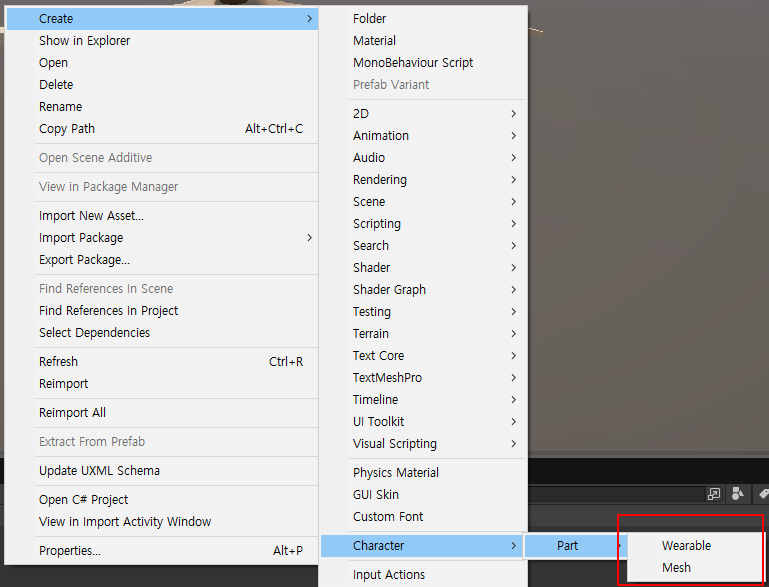
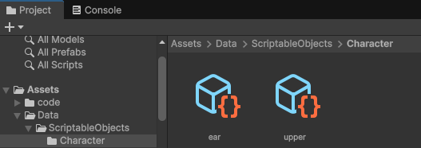
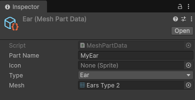
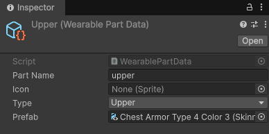
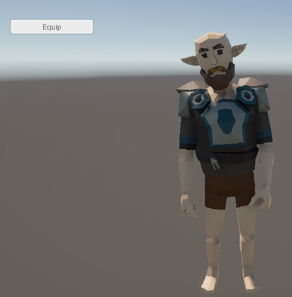

| Change Parts에서는 리소스 설정 및 복장을
착용하는 코드에서 대해서 알아 보았습니다. 두번째는 데이터 중심으로 코드를 좀 다듬어 보겠습니다. Enum을 하나로 합치되, 카테고리 필드를 추가해서 착용형인지 메쉬형인지 구분하는 방식입니다. ScriptableObject로 데이터 정의를 할때 사용 합니다. ScriptableObject를 이용하여 비프로그래머 개발자가 리소스를 등록 할수 있도록 만들어 보겠습니다. 1. ENUM 정의PartCategory, PartType을 enum을 이용해 파츠 타입을 정의 합니다.PartCategory.cs 파일 public enum PartCategory
{ Wearable, Mesh } PartType.cs 파일 public enum PartType
{ // Wearable Upper, Pants, Gloves, Shoes, // Mesh Ear, Hair, Face, Tail } 2. ScriptableObject로 데이터 정의C#의 abstract 클래스, abstract 함수는?
Expression-bodied Properties란? 프로퍼티를 한 줄짜리 표현식으로 간단히 작성하는 문법이에요. class ExpressionTest { private int _x; public int X { get => _x; set => _x = value; } } 여기서 읽기 전용으로만 표시 하고 싶으면 읽기 전용 속성을 만들고 싶다면 get을 생략하고 =>만 사용 class Person { public string Name { get; set; } public int NameLength => Name.Length; } PartData를 상속하여 MeshPartData의 Category는 PartCategory.Mesh PartData를 상속하여 WearablePartData Category는 PartCategory.Wearable PartData.cs 파일 using UnityEngine;
public abstract class PartData : ScriptableObject { public string partName; public Sprite icon; //C# expression-bodied property 문법, Read-Only 속성 public abstract PartCategory Category { get; } // Wearable / Mesh public PartType type; // Upper, Pants, Ear, Hair 등 } MeshPartData.cs using UnityEngine;
[CreateAssetMenu(menuName = "Character/Part/Mesh")] public class MeshPartData : PartData { public Mesh mesh; public override PartCategory Category => PartCategory.Mesh; } WearablePartData.cs using UnityEngine;
[CreateAssetMenu(menuName = "Character/Part/Wearable")] public class WearablePartData : PartData { public SkinnedMeshRenderer prefab; public override PartCategory Category => PartCategory.Wearable; } CharacterCustomizer로 장비 착용Change Parts에서 핵심 코드는 변경된것이 없습니다.복장 착용은 newPart.rootBone = baseMeshRenderer.rootBone; newPart.bones = baseMeshRenderer.bones; 귀, 코 어태치는 targetRenderer.sharedMesh = partData.mesh; PartType에 따라 ScriptableObject를 이용하여 데이타를 정의 합니다. CharacterCustomizer.cs 파일 using System.Collections.Generic;
using UnityEngine; using UnityEngine.Rendering; public class CharacterCustomizer : MonoBehaviour { [Header("Base Character")] [SerializeField] private SkinnedMeshRenderer baseMeshRenderer; [Header("Mesh Swap Renderers")] [SerializeField] private SkinnedMeshRenderer earRenderer; [SerializeField] private SkinnedMeshRenderer hairRenderer; [SerializeField] private SkinnedMeshRenderer faceRenderer; [SerializeField] private SkinnedMeshRenderer tailRenderer; private Dictionary<PartType, SkinnedMeshRenderer> equippedWearables = new(); // 공통 Equip 메서드 public void Equip(PartData partData) { if (partData == null) return; switch (partData.Category) { case PartCategory.Wearable: EquipWearable(partData as WearablePartData); break; case PartCategory.Mesh: EquipMesh(partData as MeshPartData); break; } } #region 내부 장착 로직 private void EquipWearable(WearablePartData partData) { if (partData == null || partData.prefab == null) return; if (equippedWearables.TryGetValue(partData.type, out var oldPart)) { Destroy(oldPart.gameObject); } var newPart = Instantiate(partData.prefab, transform); newPart.rootBone = baseMeshRenderer.rootBone; newPart.bones = baseMeshRenderer.bones; equippedWearables[partData.type] = newPart; } private void EquipMesh(MeshPartData partData) { if (partData == null || partData.mesh == null) return; SkinnedMeshRenderer targetRenderer = partData.type switch { PartType.Ear => earRenderer, PartType.Hair => hairRenderer, PartType.Face => faceRenderer, PartType.Tail => tailRenderer, _ => null }; if (targetRenderer != null) { targetRenderer.sharedMesh = partData.mesh; } } #endregion } switch expression 예시
int number = 2; string result = number switch { 1 => "하나", 2 => "둘", 3 => "셋", _ => "기타" }; Debug.Log(result); // "둘" PartData 사용 방법버튼을 만들고 UIEquipButton을 컴포넌트로 추가 합니다.equipButton에 만든 버튼을 드래그 합니다. UIEquipButton.cs using UnityEngine;
using UnityEngine.UI; public class UIEquipButton : MonoBehaviour { [Header("Target Customizer")] [SerializeField] private CharacterCustomizer customizer; [Header("Part to Equip: wear")] [SerializeField] private PartData upperPartData; [Header("Part to Equip: attach")] [SerializeField] private PartData earPartData; [Header("UI Button")] [SerializeField] private Button equipButton; private void Awake() { if (equipButton != null) { equipButton.onClick.AddListener(OnEquipClicked); } } private void OnEquipClicked() { if (customizer != null && earPartData != null) customizer.Equip(earPartData); if (customizer != null && upperPartData != null) customizer.Equip(upperPartData); } } Project > Assets > Data > ScriptableObjects 폴더를 만들고  ear, upper 데이터를 생성합니다.  ear 데이터 지정  upper 데이터 지정  실행 화면입니다.  소스) PartCategory.cs PartType.cs PartData.cs MeshPartData.cs WearablePartData.cs CharacterCustomizer.cs UIEquipButton.cs |